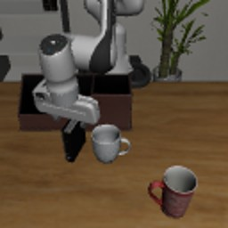
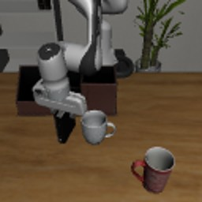
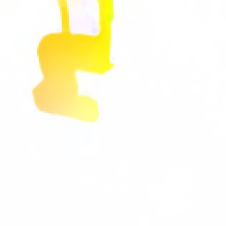
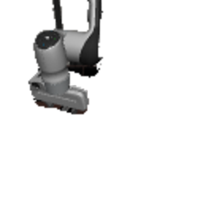
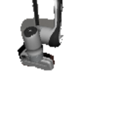
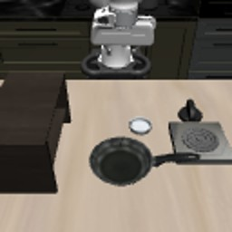
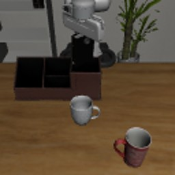
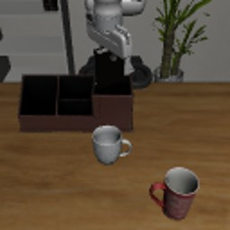
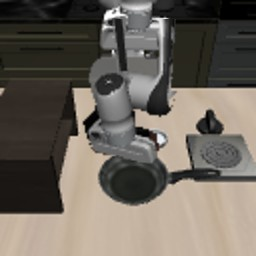

JustAct: Extracting Action Representations from Foundation Models for World Models
NeurIPS 2026
Extracting Action Representations from Foundation Models for World Models
University of Oxford
Unseen worlds
Real actions in anime, games and paintings it has never seen
The world model starts from a single still image and plays out actions read from real videos. Nothing in training looked like these images.
Small inset: the real source clip. Large: the video JustAct generates from the start image, which the world model sees as its 6 context frames. Every navigation scene gets the same list of actions.
JustAct reads the action from one video and plays it out in any other scene, without a single action label.
Overview
A world model that is driven by actions needs an action signal that says what moved, not where it happened. Latent action models learned from raw video tend to absorb the scene along with the motion.
JustAct adapts a V-JEPA 2 video encoder into an action encoder using only unlabelled video. A frame pair goes in and a 640-dimensional action embedding comes out. Training is contrastive: the same motion pasted into a different scene must map close to the original, and a different motion from the same scene must map far away. No action labels are used at any point.
Action transfer
One action, any scene
JustAct reads the action from a source clip: a real video, or footage from a game. The world model plays that action out from the first frames of a different scene, and the new video moves the way the source moved.
19 generated frames after 6 context frames of the new scene. Unseen: never used to train the action encoder or the world model.
Action × scene
Every action in every scene
Each row takes the action from one clip. Each column starts from one scene.
Turns and tilts: the same start image, six different actions. Row 1 (driving forward) and row 4 are from public gameplay recordings on Hugging Face (Forza Horizon 5, Assassin’s Creed Origins; the footage belongs to each game’s publisher). Rows 2 and 3 are two moments of “Ride to Leh, July 2017 - Sarchu to Leh, Ladakh” by Torque Biker (CC BY 3.0), row 5 is “DJI FPV drone meets fox in rape field” by anotherview (CC BY 3.0), and row 6 is “Earth Views from the International Space Station” by NASA (public domain). The start images were made by a text-to-image model.
Games and the web: rows 1 to 5 are short segments of public gameplay recordings on Hugging Face; the game footage belongs to each game’s publisher. Rows 6 to 8 are from Wikimedia Commons: “FPV drone flying in alpine conditions with snow, sleet and rain” by anotherview (CC BY 3.0), “Max and Moritz Efteling Mack Dueling Powered Coaster POV no audio” by Canobie Coaster (CC BY 3.0), “Ride to Leh, July 2017 - Sarchu to Leh, Ladakh” by Torque Biker (CC BY 3.0). The start images were made by a text-to-image model. None of these sources or scenes was used in training.
Method
Same motion, new scene. No action labels.
JustAct turns a self-supervised V-JEPA 2 video encoder into an action encoder. A frame pair goes in as a two-frame clip, the tokens are mean-pooled, and a projection gives a 640-dimensional action embedding. Only LoRA adapters are trained.
Positive and hard negative, decided by optical flowreal frames, built by our training code








t′t′+kContrast: pull the same motion together, push the same scene apartschematic; point positions are illustrative

Same motion, new scene
For fixed-camera clips, the moving region is found with RAFT optical flow, moved to a random position and pasted onto a frame of another scene. Clips with a moving camera use a colour-jittered copy instead.
Same scene, other motion
The hard negative is another time window of the same clip. It shares the scene with the anchor, so the encoder cannot tell them apart by recognising the scene.
Label-free and lightweight
168K frame pairs from 9 video datasets, with no action labels. Only LoRA adapters are trained (rank 16, about 7M parameters), in about 1.5 hours on one RTX 4090.
Plug into a world model
The frozen 640-dimensional embedding replaces the latent action of an AdaWorld world model. Every action representation is trained with the same recipe and the same 19,946 clips.
Results
More action, less scene
AdaWorld and DreamDojo latent action models are retrained on the same 168K pairs as our encoder (marked †). Datasets marked ° contributed unlabelled videos to our encoder's training; all others are unseen. Bold: best; underline: second best.
Over 12 datasets. V-JEPA 2: 0.347, DreamDojo: 0.211. Random features score below 0.
Best transfer direction in every column. LIBERO: 0.917 against 0.803 for DreamDojo.
Best in every cell. Ahead of DreamDojo outside the 95% interval in 7 of the 8.
Least scene information recoverable on average. V-JEPA 2: 0.275.
Does the representation carry the action?
A linear layer predicts the ground-truth action from each frozen representation. JustAct has the highest mean R² (0.490) and is best on 11 of 13 datasets. Raw V-JEPA 2 features turn negative on RoboCasa and DROID (−0.368, −0.131), where JustAct stays positive.
| Robot manipulation | Camera navigation | Game (F1) | ||||||||||||
|---|---|---|---|---|---|---|---|---|---|---|---|---|---|---|
| Representation | LIBERO° | DROID° | RLBench | RoboCasa | DROID-IPRL | MetaWorld | MUTEX | Robosuite | RoboDesk | SpatialVID° | ARKitScenes | RE10K | Procgen | Avg. |
| Random | −0.032 | −0.112 | −0.021 | −0.100 | −0.094 | −0.062 | −0.156 | −0.093 | −0.072 | −0.092 | −0.090 | −0.074 | 0.073 | −0.083 |
| AdaWorld† | 0.199 | 0.011 | 0.136 | −0.154 | 0.009 | −0.045 | 0.191 | 0.121 | 0.170 | 0.108 | 0.006 | 0.046 | 0.063 | 0.067 |
| DreamDojo† | 0.324 | 0.071 | 0.246 | 0.034 | 0.162 | 0.156 | 0.425 | 0.319 | 0.268 | 0.266 | 0.087 | 0.173 | 0.092 | 0.211 |
| V-JEPA 2 | 0.718 | −0.131 | 0.556 | −0.368 | 0.186 | 0.144 | 0.527 | 0.448 | 0.520 | 0.301 | 0.665 | 0.598 | 0.145 | 0.347 |
| JustAct (ours) | 0.634 | 0.203 | 0.566 | 0.322 | 0.279 | 0.277 | 0.566 | 0.695 | 0.581 | 0.560 | 0.588 | 0.609 | 0.200 | 0.490 |
Test R² (Procgen: macro-F1 over 15 actions), mean over 3 probe seeds. Held-out scenes; for LIBERO and RLBench, held-out demonstrations. Avg.: mean over the 12 continuous-action datasets.
Does it leak the scene?
A decoder tries to reconstruct the post-action frame from the representation, on scenes it never saw. Higher LPIPS means less of the scene can be recovered. JustAct leaks the least on average (0.304) while carrying the most action information. Raw V-JEPA 2 leaks the most (0.275).
| Robot manipulation | Camera navigation | Game | Average | |||||||||||||
|---|---|---|---|---|---|---|---|---|---|---|---|---|---|---|---|---|
| Representation | LIBERO° | DROID° | RLBench | RoboCasa | DROID-IPRL | MetaWorld | MUTEX | Robosuite | RoboDesk | SpatialVID° | ARKitScenes | RE10K | Procgen | LPIPS↑ | SSIM↓ | L1↑ |
| AdaWorld† | 0.288 | 0.314 | 0.273 | 0.363 | 0.320 | 0.136 | 0.211 | 0.307 | 0.127 | 0.366 | 0.405 | 0.369 | 0.325 | 0.293 | 0.374 | 0.256 |
| DreamDojo† | 0.306 | 0.315 | 0.283 | 0.375 | 0.317 | 0.137 | 0.212 | 0.308 | 0.119 | 0.379 | 0.405 | 0.385 | 0.347 | 0.299 | 0.369 | 0.260 |
| V-JEPA 2 | 0.257 | 0.289 | 0.216 | 0.480 | 0.247 | 0.066 | 0.130 | 0.282 | 0.069 | 0.402 | 0.384 | 0.442 | 0.311 | 0.275 | 0.478 | 0.200 |
| JustAct (ours) | 0.314 | 0.328 | 0.269 | 0.411 | 0.322 | 0.105 | 0.177 | 0.317 | 0.100 | 0.407 | 0.411 | 0.436 | 0.352 | 0.304 | 0.391 | 0.255 |
Held-out LPIPS↑ per dataset; same decoder for every representation, 10 epochs at 128×128, mean over 4 seeds. A representation with no information at all also leaks nothing, so read this together with the probing table.
Does a world model follow it?
The same AdaWorld world model is trained with each action representation. In Transfer, one clip's actions drive a different scene, and Dir measures whether the generated motion goes the way the source moved. JustAct is best on Dir in all five columns. Self PSNR is close to DreamDojo throughout.
| LIBERO° | RLBench | SpatialVID° | nuScenes dev. | nuScenes conf. | ||||||
|---|---|---|---|---|---|---|---|---|---|---|
| Action representation | Self PSNR↑ | Transfer Dir↑ | Self PSNR↑ | Transfer Dir↑ | Self PSNR↑ | Transfer Dir↑ | Self PSNR↑ | Transfer Dir↑ | Self PSNR↑ | Transfer Dir↑ |
| No action | 18.41 | 0.186 | 18.51 | −0.054 | 15.42 | −0.188 | 18.60 | −0.092 | 19.10 | 0.398 |
| AdaWorld† | 18.90 | 0.162 | 18.32 | −0.109 | 15.52 | −0.274 | 18.44 | −0.142 | 19.46 | 0.432 |
| DreamDojo† | 19.95 | 0.803 | 18.08 | 0.572 | 16.40 | 0.480 | 18.57 | 0.574 | 19.67 | 0.571 |
| JustAct (ours) | 20.32 | 0.917 | 18.63 | 0.686 | 16.10 | 0.608 | 18.56 | 0.659 | 19.38 | 0.603 |
Self: PSNR (dB) when driven by the clip's own actions. Transfer Dir: cosine between the optical-flow direction of the generated video and of the source clip (0: unrelated, 1: same). The no-action row is a reference and is not ranked.
Does it help after fine-tuning on a new domain?
Each pretrained world model is fine-tuned on a small labelled set from a new domain. After 800 updates JustAct follows the commanded action best in all four domains. On nuScenes the gap is largest: 0.928 against 0.722. Image fidelity converges to the same level for every method.
| DMLab | Minecraft | Habitat | nuScenes | |||||||||
|---|---|---|---|---|---|---|---|---|---|---|---|---|
| (a) Controllability after 800 updates: Follow↑ / Control↑ (dB) | ||||||||||||
| Real frames | 0.997 | – | 0.900 | – | 0.787 | – | – | – | ||||
| AdaWorld† | 0.508 | 4.04 | 0.647 | 6.88 | 0.527 | 3.04 | 0.628 | 0.04 | ||||
| DreamDojo† | 0.863 | 7.99 | 0.787 | 7.59 | 0.749 | 7.33 | 0.722 | 0.15 | ||||
| JustAct (ours) | 0.901 | 8.95 | 0.821 | 7.81 | 0.767 | 7.35 | 0.928 | 0.64 | ||||
| Δ vs best baseline | +0.038 | +0.96 | +0.034 | +0.22 | +0.018 | +0.02 | +0.207 | +0.49 | ||||
| (b) Fidelity: PSNR↑ (dB) after 0 / 200 / 800 updates | ||||||||||||
| AdaWorld† | 18.77 | 21.35 | 22.34 | 23.07 | 23.36 | 23.46 | 18.44 | 18.95 | 20.99 | 24.59 | 24.85 | 24.77 |
| DreamDojo† | 19.14 | 22.56 | 23.08 | 22.80 | 23.48 | 23.49 | 19.24 | 23.00 | 23.78 | 24.53 | 24.83 | 24.77 |
| JustAct (ours) | 19.28 | 22.82 | 23.11 | 22.57 | 23.59 | 23.54 | 20.56 | 23.27 | 23.74 | 24.59 | 24.83 | 24.76 |
| Δ vs best baseline | +0.14 | +0.26 | +0.03 | −0.50 | +0.11 | +0.05 | +1.31 | +0.27 | −0.04 | 0.00 | −0.02 | 0.00 |
Follow↑: accuracy of an inverse-dynamics classifier at recognising the commanded action in the generated frame (chance 0.333; Real frames: the same classifier on real frames). On nuScenes, Spearman correlation between commanded and generated forward motion (chance 0). Control↑: PSNR under the commanded action minus under other actions (0 means the action is ignored). Δ is grey when the 95% paired bootstrap interval contains 0.
A self-supervised video encoder already knows how things move. JustAct turns that knowledge into actions a world model can follow.
BibTeX
@article{li2026justact,
title = {JustAct: Extracting Action Representations from Foundation Models for World Models},
author = {Li, Runjia and Chen, Minghao and Xie, Junyu and Torr, Philip and Vedaldi, Andrea and Jakab, Tomas},
journal = {arXiv preprint arXiv:XXXX.XXXXX},
year = {2026}
}